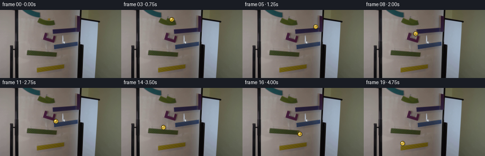
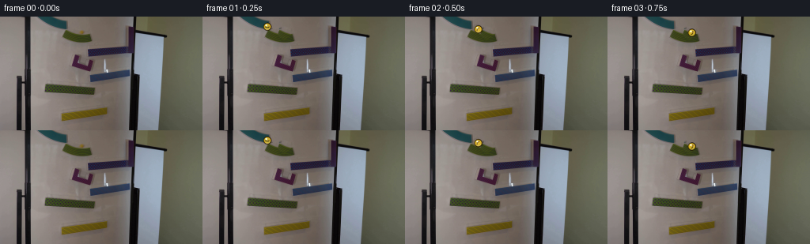
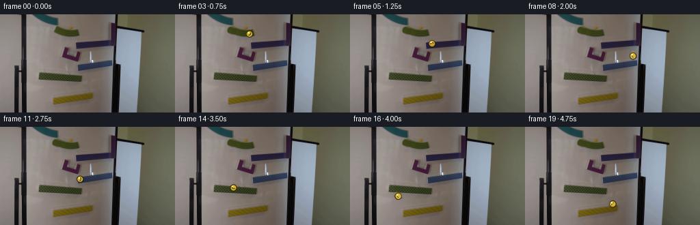
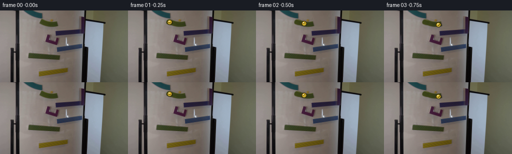

CODING AGENTS AS PIXEL WORLD MODELS
traex/GPT-5.6-Sol · 0103
点击播放 · 原生 RGB 像素
逐轮保存的候选
回放视频、检查图与代码变化。
每份候选均可单独播放。实际图片检查记录在下方工具轨迹中。
候选 01播放与检查图
点击播放 · 原生 RGB 像素


展开代码变化
--- 上一保存版本
+++ 本次保存版本
@@ -0,0 +1,108 @@
+from pathlib import Path
+import numpy as np
+from PIL import Image, ImageDraw, ImageFilter
+import artifact_io
+
+ROOT = Path(__file__).resolve().parent
+base = np.asarray(Image.open(ROOT/'first_frame.png').convert('RGB'), dtype=np.uint8)
+H,W = base.shape[:2]
+
+# The run is a sequence of alternating, gently sloped magnetic rails visible in
+# the source photograph. Coordinates follow their upper/working edge.
+rails = [
+ ((80.,14.5),(112.,24.5)), # short yellow top rail
+ ((162.,38.5),(112.,42.5)), # blue rail
+ ((164.,67.0),(113.,75.0)), # blue rail
+ ((57.,85.0),(120.,90.0)), # green rail
+ ((131.,115.0),(77.,122.5)), # yellow rail
+]
+
+# A continuous path: roll on each rail, fall at its end to the next one. The
+# points deliberately include tiny pauses at landings, which reads as a real
+# glass ball bouncing against the lip rather than teleporting between pieces.
+key = [
+ (0.00,82.0,12.8), (0.24,82.0,12.8),
+ (0.83,108.0,20.9), (1.02,114.0,30.0), (1.15,157.0,35.5),
+ (1.83,116.0,39.8), (2.02,108.0,53.0), (2.14,158.0,63.0),
+ (2.84,116.0,71.2), (3.03,111.0,81.8), (3.14,62.0,81.0),
+ (3.84,114.0,86.0), (4.02,123.0,101.0), (4.13,127.0,111.2),
+ (4.75,82.0,117.5), (5.00,77.0,125.0)
+]
+
+def position(t):
+ for (ta,xa,ya),(tb,xb,yb) in zip(key[:-1],key[1:]):
+ if ta <= t <= tb:
+ u=(t-ta)/(tb-ta)
+ # Rolling sections use acceleration; airborne transitions are
+ # slightly eased while retaining a downward gravitational arc.
+ if abs(yb-ya)<10: u=u*u*(3-2*u)
+ else: u=u*u
+ return xa+(xb-xa)*u, ya+(yb-ya)*u
+ return key[-1][1:]
+
+def patch_background(cx,cy,r=8):
+ """Remove the source-frame marble using nearby board/rail texture.
+
+ The original yellow ball begins at the upper rail around (103,20). A
+ translated clean patch from the same rail preserves the photographic
+ noise, lighting and edge better than a flat painted circle.
+ """
+ out=base.copy()
+ Y,X=np.ogrid[:H,:W]
+ mask=np.clip((r+2-np.hypot(X-cx,Y-cy))/2.0,0,1)[...,None]
+ # the neighboring section 14 px to the right has matching rail/background
+ src=np.roll(base,14,axis=1)
+ out=np.clip(out*(1-mask)+src*mask,0,255).astype(np.uint8)
+ return out
+
+clean = patch_background(103,20,7)
+
+def marble_layer(cx,cy,theta,blur=False):
+ """Analytically render a small translucent yellow glass sphere."""
+ S=3
+ layer=Image.new('RGBA',(W*S,H*S),(0,0,0,0))
+ d=ImageDraw.Draw(layer,'RGBA')
+ x,y=cx*S,cy*S; r=5.0*S
+ # soft cast/contact shadow, offset downward from the glass
+ d.ellipse((x-r*.88+1*S,y+r*.25,x+r*.92+2*S,y+r*.72),fill=(15,13,8,65))
+ # dark amber outer rim and successively lit translucent body
+ d.ellipse((x-r,y-r,x+r,y+r),fill=(73,53,7,225),outline=(42,31,7,225),width=1*S)
+ d.ellipse((x-r*.82,y-r*.82,x+r*.82,y+r*.82),fill=(198,158,25,238))
+ d.ellipse((x-r*.64,y-r*.68,x+r*.66,y+r*.64),fill=(235,194,44,210))
+ # curved internal streak changes angle as the marble rotates
+ ux,uy=np.cos(theta),np.sin(theta); vx,vy=-uy,ux
+ pts=[]
+ for q in np.linspace(-.52,.52,14):
+ bend=.22*(1-q*q/.28)
+ px=x+r*(q*ux+bend*vx); py=y+r*(q*uy+bend*vy)
+ pts.append((px,py))
+ d.line(pts,fill=(120,77,5,135),width=max(1,1*S))
+ # specular highlight and faint warm bounce light
+ d.ellipse((x-r*.48,y-r*.58,x-r*.06,y-r*.16),fill=(255,252,183,235))
+ d.ellipse((x-r*.35,y-r*.45,x-r*.15,y-r*.25),fill=(255,255,238,245))
+ d.arc((x-r*.75,y-r*.68,x+r*.75,y+r*.78),20,130,fill=(255,222,85,150),width=1*S)
+ if blur: layer=layer.filter(ImageFilter.GaussianBlur(1.0*S))
+ return layer.resize((W,H),Image.Resampling.LANCZOS)
+
+frames=[base.copy()]
+prev=position(0)
+rotation=0.0
+for i in range(1,20):
+ t=i/4.0
+ cx,cy=position(t)
+ dist=((cx-prev[0])**2+(cy-prev[1])**2)**.5
+ rotation += dist/5.0
+ prev=(cx,cy)
+ bg=Image.fromarray(clean.copy()).convert('RGBA')
+ # At fast falls, a very restrained trailing exposure gives realistic
+ # 4-fps motion blur without obscuring the marble's current location.
+ px,py=position(max(0,t-.055))
+ if abs(px-cx)+abs(py-cy)>2.8:
+ trail=marble_layer((cx+px)/2,(cy+py)/2,rotation-.25,True)
+ trail.putalpha(trail.getchannel('A').point(lambda a:a*45//255))
+ bg.alpha_composite(trail)
+ bg.alpha_composite(marble_layer(cx,cy,rotation))
+ frames.append(np.asarray(bg.convert('RGB'),dtype=np.uint8))
+frames=np.stack(frames)
+assert np.array_equal(frames[0],base)
+artifact_io.save(frames,ROOT)
候选 02播放与检查图
点击播放 · 原生 RGB 像素


展开代码变化
--- 上一保存版本
+++ 本次保存版本
@@ -21,12 +21,14 @@
# points deliberately include tiny pauses at landings, which reads as a real
# glass ball bouncing against the lip rather than teleporting between pieces.
key = [
- (0.00,82.0,12.8), (0.24,82.0,12.8),
- (0.83,108.0,20.9), (1.02,114.0,30.0), (1.15,157.0,35.5),
- (1.83,116.0,39.8), (2.02,108.0,53.0), (2.14,158.0,63.0),
- (2.84,116.0,71.2), (3.03,111.0,81.8), (3.14,62.0,81.0),
- (3.84,114.0,86.0), (4.02,123.0,101.0), (4.13,127.0,111.2),
- (4.75,82.0,117.5), (5.00,77.0,125.0)
+ (0.00,82.5,23.5), (0.18,82.5,23.5),
+ (0.82,110.0,29.0), (1.02,113.0,39.0),
+ (1.12,116.0,43.0), (1.80,158.0,43.0),
+ (2.04,158.0,69.0), (2.14,157.0,72.0),
+ (2.82,116.0,77.0), (3.04,116.0,87.0),
+ (3.15,114.0,90.0), (3.80,63.0,89.0),
+ (4.08,78.0,114.0), (4.18,81.0,119.5),
+ (4.82,130.0,113.0), (5.00,134.0,137.0)
]
def position(t):
@@ -50,12 +52,13 @@
out=base.copy()
Y,X=np.ogrid[:H,:W]
mask=np.clip((r+2-np.hypot(X-cx,Y-cy))/2.0,0,1)[...,None]
- # the neighboring section 14 px to the right has matching rail/background
- src=np.roll(base,14,axis=1)
+ # A clean neighboring section eight pixels down the same diagonal has the
+ # same rail profile and photographic grain.
+ src=np.roll(base,(-2,-8),(0,1))
out=np.clip(out*(1-mask)+src*mask,0,255).astype(np.uint8)
return out
-clean = patch_background(103,20,7)
+clean = patch_background(82.5,23.5,5.5)
def marble_layer(cx,cy,theta,blur=False):
"""Analytically render a small translucent yellow glass sphere."""
可观测工具轨迹
实际执行的命令与返回图片。
命令 1exit 0
/bin/bash -lc "cat prompt.txt && printf '\\n---RULES---\\n' && cat GENERATION_RULES.md"
命令 2exit 127
/bin/bash -lc "find . -maxdepth 2 -type f -printf '%p %s bytes\\n' | sort && file first_frame.png"
命令 3exit 0
/bin/bash -lc "python3 - <<'PY'
from PIL import Image
import numpy as np
im=np.array(Image.open('first_frame.png').convert('RGB'))
print(im.shape, im.min((0,1)), im.max((0,1)), im.mean((0,1)).round(1))
# quantized common colors
q=(im//16)*16+8
u,c=np.unique(q.reshape(-1,3),axis=0,return_counts=True)
for i in np.argsort(c)[-25:][::-1]: print(c[i],u[i])
# blocks mean grid 16x9
for y in range(9):
print(' | '.join('%3d,%3d,%3d'%tuple(im[y*16:(y+1)*16,x*16:(x+1)*16].mean((0,1)).astype(int)) for x in range(16)))
PY"命令 4exit 0
/bin/bash -lc "python3 - <<'PY'
import cv2,numpy as np
im=cv2.imread('first_frame.png'); hsv=cv2.cvtColor(im,cv2.COLOR_BGR2HSV)
for s in [40,60,80,100,120]:
for typ,(lo,hi) in {'yellow':((15,s,30),(40,255,255)),'red':((0,s,20),(15,255,255)),'blue':((90,s,20),(135,255,255)),'green':((40,s,20),(90,255,255))}.items():
m=cv2.inRange(hsv,np.array(lo),np.array(hi)); n,lab,stats,cens=cv2.connectedComponentsWithStats(m)
z=[]
for j in range(1,n):
x,y,w,h,a=stats[j];
if a>=3:z.append((a,(x,y,w,h),tuple(np.round(cens[j],1))))
print('s',s,typ,sorted(z,reverse=True)[:12])
PY"命令 5exit 0
/bin/bash -lc "python3 - <<'PY'
import cv2, numpy as np
im=cv2.imread('first_frame.png'); g=cv2.cvtColor(im,cv2.COLOR_BGR2GRAY)
for t in [(30,80),(60,150),(100,200)]:
e=cv2.Canny(g,*t); L=cv2.HoughLinesP(e,1,np.pi/180,threshold=20,minLineLength=15,maxLineGap=4)
print('\\n',t)
if L is not None:
vals=[]
for q in L[:,0]:
x1,y1,x2,y2=map(int,q); le=np.hypot(x2-x1,y2-y1); ang=np.degrees(np.arctan2(y2-y1,x2-x1)); vals.append((round(le,1),round(ang,1),(x1,y1,x2,y2)))
print(*sorted(vals,reverse=True)[:60],sep='\\n')
PY"命令 6exit 0
/bin/bash -lc "python3 - <<'PY'
import cv2,numpy as np
im=cv2.imread('first_frame.png'); h=cv2.cvtColor(im,cv2.COLOR_BGR2HSV)
# ascii hue/saturation map x40:170 y0:140 sampling 2x2 dominant
for y in range(0,144,2):
s=''
for x in range(40,172,2):
H=h[y:y+2,x:x+2]; hh=int(np.mean(H[:,:,0])); ss=int(np.mean(H[:,:,1])); vv=int(np.mean(H[:,:,2]))
if vv<45: c='#'
elif vv<75:c='x'
elif ss<25:c='.'
elif ss<50:c=','
elif hh<12 or hh>170:c='R'
elif hh<40:c='Y'
elif hh<90:c='G'
elif hh<135:c='B'
else:c='M'
s+=c
print(f'{y:03}',s)
PY"命令 7exit 0
/bin/bash -lc "python3 - <<'PY'
import cv2,numpy as np
im=cv2.imread('first_frame.png'); g=cv2.cvtColor(im,cv2.COLOR_BGR2GRAY)
for p2 in [8,10,12,14,16,20]:
cs=cv2.HoughCircles(g,cv2.HOUGH_GRADIENT,dp=1,minDist=6,param1=80,param2=p2,minRadius=2,maxRadius=12)
print('p2',p2, None if cs is None else np.round(cs[0],1).tolist())
PY"命令 8exit 0
/bin/bash -lc "python3 - <<'PY'
from PIL import Image
import numpy as np,cv2
im=np.array(Image.open('first_frame.png').convert('RGB')); hsv=cv2.cvtColor(im,cv2.COLOR_RGB2HSV)
pts=[(174,15,8),(83,24,7),(94,93,7),(75,92,7),(123,60,12),(108,58,11),(132,120,7)]
for cx,cy,r in pts:
print('\\nCENTER',cx,cy,'rgb',im[cy,cx], 'hsv',hsv[cy,cx])
a=im[max(0,cy-r):cy+r+1,max(0,cx-r):cx+r+1]; h=hsv[max(0,cy-r):cy+r+1,max(0,cx-r):cx+r+1]
print('rgb mean/std/min/max',a.mean((0,1)).round(1),a.std((0,1)).round(1),a.min((0,1)),a.max((0,1)))
for y in range(max(0,cy-r),min(144,cy+r+1)):
s=''
for x in range(max(0,cx-r),min(256,cx+r+1)):
hh,ss,v=hsv[y,x]
if v<45:c='#'
elif v<75:c='x'
elif ss<25:c='.'
elif ss<50:c=','
elif hh<12 or hh>170:c='R'
elif hh<40:c='Y'
elif hh<90:c='G'
elif hh<135:c='B'
else:c='M'
s+=c
print(s)
PY"命令 9exit 1
/bin/bash -lc "python3 - <<'PY'
from PIL import Image
import numpy as np, cv2
im=np.array(Image.open('first_frame.png').convert('RGB'))
# print luminance and saturation at every pixel in region x74:121 y12:36 as chars
h=cv2.cvtColor(im,cv2.COLOR_RGB2HSV); g=cv2.cvtColor(im,cv2.COLOR_RGB2GRAY)
chars=' .:-=+*#%@'
print('LUMA')
for y in range(10,38):
print('%3d '%y+''.join(chars[min(9,g[y,x]*10//256)] for x in range(72,122)))
print('HUE classes')
for y in range(10,38):
s=''
for x in range(72,122):
hh,ss,v=h[y,x]
if v<50:c='#'
elif ss<40:c='.'
elif hh<15 or hh>170:c='R'
elif hh<40:c='Y'
elif hh<80:c='G'
elif hh<140:c='B'
else:c='M'
s+=c
print('%3d '%y+s)
PY"命令 10exit 0
/bin/bash -lc "python3 - <<'PY'
from PIL import Image
import numpy as np, cv2
im=np.array(Image.open('first_frame.png').convert('RGB')); h=cv2.cvtColor(im,cv2.COLOR_RGB2HSV); g=cv2.cvtColor(im,cv2.COLOR_RGB2GRAY)
chars=' .:-=+*#%@'
print('LUMA')
for y in range(10,38): print('%3d '%y+''.join(chars[min(9,int(g[y,x])*10//256)] for x in range(72,122)))
print('HUE')
for y in range(10,38):
s=''
for x in range(72,122):
hh,ss,v=map(int,h[y,x]); c='#' if v<50 else '.' if ss<40 else 'R' if hh<15 or hh>170 else 'Y' if hh<40 else 'G' if hh<80 else 'B' if hh<140 else 'M'; s+=c
print('%3d '%y+s)
PY"命令 11exit 0
/bin/bash -lc "python3 - <<'PY'
from PIL import Image
import numpy as np
im=np.array(Image.open('first_frame.png').convert('RGB'))
for cy,cx in [(20,103),(24,83),(23,96),(15,82),(40,157),(35,158),(42,154),(93,94)]:
print('\\n',cx,cy)
for y in range(cy-5,cy+6): print(' '.join('%03d'%int(im[y,x].mean()) for x in range(cx-7,cx+8)))
PY"命令 12exit 0
/bin/bash -lc "python3 - <<'PY'
import cv2,numpy as np
im=cv2.imread('first_frame.png'); hsv=cv2.cvtColor(im,cv2.COLOR_BGR2HSV); g=cv2.cvtColor(im,cv2.COLOR_BGR2GRAY)
for x,y,r in [(74.5,91.5,5.5),(93.5,92.5,4.2),(86.5,94.5,3.3),(82.5,23.5,3),(173.5,14.5,5.5),(131.5,119.5,4),(65.5,90.5,5.5),(107.5,93.5,4.6),(122.5,60.5,11.4),(108.5,57.5,10.3),(102.5,54.5,10)]:
Y,X=np.ogrid[:144,:256]; d=np.hypot(X-x,Y-y); inn=d<=r; ring=(d>r)&(d<=r+3)
print((x,y,r),'in rgb',im[inn].mean(0).round(1),'hsv',hsv[inn].mean(0).round(1),'graystd',g[inn].std().round(1),'ring rgb',im[ring].mean(0).round(1),'edge',abs(g[inn].mean()-g[ring].mean()).round(1))
PY"命令 13exit 0
/bin/bash -lc "python3 - <<'PY'
from PIL import Image
import numpy as np
im=np.array(Image.open('first_frame.png').convert('RGB')).astype(float)
# brighten luma only textual
lum=im@np.array([.2126,.7152,.0722]); chars='@%#*+=-:. '
for y in range(0,144,2):
s=''
for x in range(0,256,2):
v=lum[y:y+2,x:x+2].mean(); s+=chars[min(9,int(v/256*10))]
print(s)
PY"命令 14exit 0
/bin/bash -lc "sed -n '1,240p' artifact_io.py"
命令 15exit 1
/bin/bash -lc "python3 - <<'PY'
import cv2,numpy as np
im=cv2.imread('first_frame.png')[:,:,::-1].astype(float)
# scores for disk yellow chroma contrast ring, edges circular variance
Y=(im[:,:,0]+im[:,:,1]-2*im[:,:,2]); lum=im.mean(2)
res=[]
for r in range(3,11):
for y in range(r+2,80-r-2):
for x in range(r+2,230-r-2):
yy,xx=np.ogrid[-r-3:r+4,-r-3:r+4]; d=np.hypot(xx,yy); a=Y[y-r-3:y+r+4,x-r-3:x+r+4]; l=lum[y-r-3:y+r+4,x-r-3:x+r+4]
inn=d<=r; ring=(d>r+1)&(d<=r+3)
# yellow inside, more than ring, prefer color + circular contrast
score=a[inn].mean()*.3+(a[inn].mean()-a[ring].mean())*.7 + abs(l[inn].mean()-l[ring].mean())*.3
res.append((score,x,y,r,a[inn].mean(),a[ring].mean(),l[inn].mean(),l[ring].mean()))
for z in sorted(res,reverse=True)[:50]:print(tuple(round(v,1) for v in z))
PY"命令 16exit 0
/bin/bash -lc "python3 - <<'PY'
import cv2,numpy as np
im=cv2.imread('first_frame.png')[:,:,::-1].astype(float); Y=(im[:,:,0]+im[:,:,1]-2*im[:,:,2]); lum=im.mean(2)
res=[]
for r in range(3,11):
R=r+3; yy,xx=np.ogrid[-R:R+1,-R:R+1]; d=np.hypot(xx,yy); inn=d<=r; ring=(d>r+1)&(d<=r+3)
for y in range(R,80-R):
for x in range(R,230-R):
a=Y[y-R:y+R+1,x-R:x+R+1]; l=lum[y-R:y+R+1,x-R:x+R+1]
score=a[inn].mean()*.3+(a[inn].mean()-a[ring].mean())*.7 + abs(l[inn].mean()-l[ring].mean())*.3
res.append((score,x,y,r,a[inn].mean(),a[ring].mean(),l[inn].mean(),l[ring].mean()))
for z in sorted(res,reverse=True)[:50]:print(tuple(round(v,1) for v in z))
PY"命令 17exit 0
/bin/bash -lc "cat > generate.py <<'PY'
from pathlib import Path
import numpy as np
from PIL import Image, ImageDraw, ImageFilter
import artifact_io
ROOT = Path(__file__).resolve().parent
base = np.asarray(Image.open(ROOT/'first_frame.png').convert('RGB'), dtype=np.uint8)
H,W = base.shape[:2]
# The run is a sequence of alternating, gently sloped magnetic rails visible in
# the source photograph. Coordinates follow their upper/working edge.
rails = [
((80.,14.5),(112.,24.5)), # short yellow top rail
((162.,38.5),(112.,42.5)), # blue rail
((164.,67.0),(113.,75.0)), # blue rail
((57.,85.0),(120.,90.0)), # green rail
((131.,115.0),(77.,122.5)), # yellow rail
]
# A continuous path: roll on each rail, fall at its end to the next one. The
# points deliberately include tiny pauses at landings, which reads as a real
# glass ball bouncing against the lip rather than teleporting between pieces.
key = [
(0.00,82.0,12.8), (0.24,82.0,12.8),
(0.83,108.0,20.9), (1.02,114.0,30.0), (1.15,157.0,35.5),
(1.83,116.0,39.8), (2.02,108.0,53.0), (2.14,158.0,63.0),
(2.84,116.0,71.2), (3.03,111.0,81.8), (3.14,62.0,81.0),
(3.84,114.0,86.0), (4.02,123.0,101.0), (4.13,127.0,111.2),
(4.75,82.0,117.5), (5.00,77.0,125.0)
]
def position(t):
for (ta,xa,ya),(tb,xb,yb) in zip(key[:-1],key[1:]):
if ta <= t <= tb:
u=(t-ta)/(tb-ta)
# Rolling sections use acceleration; airborne transitions are
# slightly eased while retaining a downward gravitational arc.
if abs(yb-ya)<10: u=u*u*(3-2*u)
else: u=u*u
return xa+(xb-xa)*u, ya+(yb-ya)*u
return key[-1][1:]
def patch_background(cx,cy,r=8):
\"\"\"Remove the source-frame marble using nearby board/rail texture.
The original yellow ball begins at the upper rail around (103,20). A
translated clean patch from the same rail preserves the photographic
noise, lighting and edge better than a flat painted circle.
\"\"\"
out=base.copy()
Y,X=np.ogrid[:H,:W]
mask=np.clip((r+2-np.hypot(X-cx,Y-cy))/2.0,0,1)[...,None]
# the neighboring section 14 px to the right has matching rail/background
src=np.roll(base,14,axis=1)
out=np.clip(out*(1-mask)+src*mask,0,255).astype(np.uint8)
return out
clean = patch_background(103,20,7)
def marble_layer(cx,cy,theta,blur=False):
\"\"\"Analytically render a small translucent yellow glass sphere.\"\"\"
S=3
layer=Image.new('RGBA',(W*S,H*S),(0,0,0,0))
d=ImageDraw.Draw(layer,'RGBA')
x,y=cx*S,cy*S; r=5.0*S
# soft cast/contact shadow, offset downward from the glass
d.ellipse((x-r*.88+1*S,y+r*.25,x+r*.92+2*S,y+r*.72),fill=(15,13,8,65))
# dark amber outer rim and successively lit translucent body
d.ellipse((x-r,y-r,x+r,y+r),fill=(73,53,7,225),outline=(42,31,7,225),width=1*S)
d.ellipse((x-r*.82,y-r*.82,x+r*.82,y+r*.82),fill=(198,158,25,238))
d.ellipse((x-r*.64,y-r*.68,x+r*.66,y+r*.64),fill=(235,194,44,210))
# curved internal streak changes angle as the marble rotates
ux,uy=np.cos(theta),np.sin(theta); vx,vy=-uy,ux
pts=[]
for q in np.linspace(-.52,.52,14):
bend=.22*(1-q*q/.28)
px=x+r*(q*ux+bend*vx); py=y+r*(q*uy+bend*vy)
pts.append((px,py))
d.line(pts,fill=(120,77,5,135),width=max(1,1*S))
# specular highlight and faint warm bounce light
d.ellipse((x-r*.48,y-r*.58,x-r*.06,y-r*.16),fill=(255,252,183,235))
d.ellipse((x-r*.35,y-r*.45,x-r*.15,y-r*.25),fill=(255,255,238,245))
d.arc((x-r*.75,y-r*.68,x+r*.75,y+r*.78),20,130,fill=(255,222,85,150),width=1*S)
if blur: layer=layer.filter(ImageFilter.GaussianBlur(1.0*S))
return layer.resize((W,H),Image.Resampling.LANCZOS)
frames=[base.copy()]
prev=position(0)
rotation=0.0
for i in range(1,20):
t=i/4.0
cx,cy=position(t)
dist=((cx-prev[0])**2+(cy-prev[1])**2)**.5
rotation += dist/5.0
prev=(cx,cy)
bg=Image.fromarray(clean.copy()).convert('RGBA')
# At fast falls, a very restrained trailing exposure gives realistic
# 4-fps motion blur without obscuring the marble's current location.
px,py=position(max(0,t-.055))
if abs(px-cx)+abs(py-cy)>2.8:
trail=marble_layer((cx+px)/2,(cy+py)/2,rotation-.25,True)
trail.putalpha(trail.getchannel('A').point(lambda a:a*45//255))
bg.alpha_composite(trail)
bg.alpha_composite(marble_layer(cx,cy,rotation))
frames.append(np.asarray(bg.convert('RGB'),dtype=np.uint8))
frames=np.stack(frames)
assert np.array_equal(frames[0],base)
artifact_io.save(frames,ROOT)
PY
python3 generate.py
python3 - <<'PY'
from PIL import Image
import numpy as np
z=np.load('pixels.npz')['pixels']; print(z.shape,z.dtype)
print('frame0 exact',np.array_equal(np.array(Image.open('frames/00.png')),np.array(Image.open('first_frame.png'))))
PY"命令 18exit 0
/bin/bash -lc "python3 generate.py && python3 - <<'PY'
from PIL import Image
import numpy as np
im=np.array(Image.open('inspection.png'))
print('inspection',im.shape)
base=np.array(Image.open('first_frame.png'))
for i in range(20):
a=np.array(Image.open(f'frames/{i:02}.png')); d=np.any(a"'!=base,2); ys,xs=np.where(d)
print(i, '"'changed',d.sum(), 'bbox', None if len(xs)==0 else (xs.min(),ys.min(),xs.max(),ys.max()))
PY
ls -lh pixels.npz index.html inspection.png frames/00.png frames/19.png"保存候选 2 份；完成命令 18 次；可验证图片返回 0 张。原始 API 响应与完整日志保留在本地。